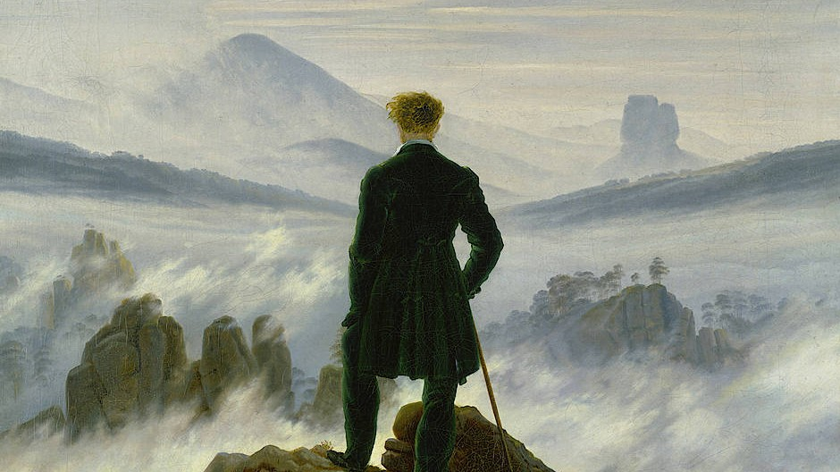

AnRu Cheng's Thematic WebsiteA Brief introduction on Renaissance Art, Romanticism Art, and Modern Art
intro
INTRODUCTION
Renaissance art, Romanticism art, and modern art are all important mile stones in Art history, since these three genres were all given rise by cultural movements. Renaissance art is the artwork produced during the era of Renaissance (14th~16th century) when people started turning their focus towards individualism, and rather the religious hierarchy. Romanticism art is produced during the Romantic era, which is a cultural movement that shift focus onto human’s emotions and the glorious past. Modern art is the art produced between 1860s to 1970s, and the works usually experiment with new ways of seeing things. In the following sections, I will introduce the origin, common themes, the distinct characteristics, and some famous art peices, of these three genres respectively.
文藝復興藝術、浪漫主義藝術、和現代藝術是三個藝術史上的里程碑，因為這三個時期的藝術創作皆源自於當時的社會文化運動。文藝復興時期（十四到十六世紀）人們逐漸關注回人相關的議題，注重「以人為本」，而不是傳統宗教。浪漫時期的藝術品，受到當時以人的情感和光榮的歷史為重。現代藝術則是1860到1970年代間所創作的作品，其內容多半是在嘗試新的藝術呈現方式，來展現藝術家眼中的世界。在接下來的部分，我會分別介紹這三個時期藝術品的歷史起源、常見主題、畫作特色、以及其經典名作的分析。
Renaissance
Renaissance Art
Renaissance art originated in Italy during the late 13th and early 14th centuries. Scholars and artists then started to look back to classical Roman culture and old values. Thus classical learning were later revived. Also, the awareness in humanism rose, and people became more and more interested in discovering more about human nature. Since artists focus are more on human beings, two major themes of Renaissance are anatomy and realism. For anatomy, as Leonardo Da Vinci dissected and analyzed human corpses, artists could observe human bodies more precisely, and produced art work that highly resembles a human figure. With humans being the center of artwork creation, a lot of paintings focused on the display of human emotions and the depiction of various individuals. One very important characteristic of Renaissance art is its linear perspective drawing. During this period the drawing system, linear perspective and vanishing points, were founded, which enabled artists to depict the world more realistically. Till today, these two systems are still the fundamentals of architectural drawing. One of the most well-known art works of this era, is “ The Mona Lisa” by Leonardo Da Vinci. The most marvelous thing about this work is the way colors blend with each other seamlessly. Every part of the work seems so soft, thar even strokes cannot be easily found. One of the reason behind this, is because Da Vinci painted 20 layers, and some of which are very thin, which makes the painting more subtle. Another interesting thing is that the way Mona Lisa’s gaze will follow you wherever you go, attracting us to her smile.
文藝復興藝術源自於13、14世紀的義大利。當時的學者和藝術家開始回頭參考羅馬時代的文化以及舊的價值等，因此學習經典蔚為風潮。當時也開始對人文主義有一定認識，人們對於探索人類越來越感興趣。因為藝術家對人類更為注重，畫作的兩大主題是解剖以及真實主義。解剖上面，達文西的解剖實驗，幫助了當時亦輸家可以更近距離的仔細觀察人體，並畫出更為逼真的作品。真實主義方面，人身為作品的主角，許多藝術品都真切的表現出各種不同的人與其情緒。其中文藝復興有個很重要的特色，是線性視角以及透視法的發明。這兩種作畫方法至今仍是建築設計最基礎的方式。蒙娜麗莎的微笑是達文西舉世聞名的畫作，而這幅作品極度令人讚嘆的是，顏色以及顏色之間相互自然的融合，畫作的每一個角落都看起來很柔軟，連筆觸都不復存在。這背後的其中一個原因是，達文西共畫了20層，因此每個細節都處理的很精緻。這幅畫另一個讓人驚奇的點是，蒙娜麗莎的眼睛是會跟隨著看畫的人移動的，將每個人目光吸引至她的微笑上。

Romanticism
Romanticism Art
Romanticism art originated during the 1789 French Revolution, when the whole Europe was undergoing enormous political and social changes. Before Romanticism, Neoclassicism is the most popular movement, and it focused more on rationality. Romanticism in oppose of that, focused on the human emotions and perceptions. This cultural movement later on spread through European countries, such as Germany, Spain, England, and so on. Since human emotions were emphasized, themes like love, death and melancholy, which contain strong emotions, were oftentimes shown in paintings. Also, nature is a major theme. Artists painted nature, because they believed that natural phenomenon can trace back to humans, such as sunset is just like the end of our lives. Some key characteristics of Romanticism art include, the depiction of emotions, which is shown through the detailed depictions of human features. Another characteristic is the majesty of the natural world. Some very famous paintings do show this characteristic through drawing dark waves or thick clouds to give an ominous feeling. One of the most famous works during this era, is "The Desperate Man" of Gustave Courbet’s. This work is his self-portrait, and in it his eyes were wide open, staring straight ahead, while heads are grabbing the messy hair. When this work was done, he was very torn in between his identities and life struggles. Thus, this painting can be interpreted as the reflection of his own mind back then, which reflects the human emotions theme of Romanticism art, and captured the real aspects of daily lives.
浪漫主義源自於1789年的法國大革命，當時歐洲的社會以及政治勢力正經歷著巨大的轉變。在浪漫主義興起之前是新古典主義在社會中最受歡迎，而其注重於人的理性。浪漫主義則是有著不同的主張，較專注於人內在的情感和對世界的解讀。這項文化運動，後來蔓延至歐洲其他各國，像德國、西班牙以及英國等。因為較著重於人的情感，愛、死亡和悲傷等富情緒等作畫主題很常見。另外，大自然也是個常見的主題，因為藝術家會將自然現象但回至人身上，像是日落就如同人生命的結束。浪漫主義藝術的特色包括，對人類情感的表達，這通常是通過對人物表情的細膩刻。另外，大自然的莊嚴也是一大特點。許多藝術品畫有深色大浪或厚重的雲，都為藝術品帶來ㄧ絲不詳的感覺。其中一個最有名的畫作是「絕望」，那是西班牙藝術家
Gustave Courbet的肖像畫。在畫中他的眼睛睜大直直的盯著前方，少則是插進那凌亂的頭髮中，這幅畫是當他人生陷入一些矛盾抉擇時所完成的，因此這個作品也可以看作是他心中感受的投影。這充分展現出浪漫主義如何透過餓藝術品傳達人最真實的情緒。
Modern
Modern Art
In the 19th century, as the industrial revolution pushed people’s lives to more cramped urban lives, the demand for art works started to rise. These social changes also inspired artists to reject the traditional conservative values, and start to experience new methods of drawing, forms and abstract art. One major theme is symbolism and dreams, as the subconscious level of human minds are frequently explored. One central characteristic of modern art is that it shows how the artist wants to portray the world. Art was no longer filled with the traditional values, but was filled with creative and different interpretations of the world. One of the most popular art pieces ever, is “Starry Night” by Van Gogh. The overwhelming night sky decorated with stars, is what fascinates people for a long time. The bold use of strokes, swirly lines, and the fiery yellow color, all makes the sky looks like it is ever moving, and the night is filled with vitality.
在19世紀，因為工業革命將人們推向擁擠的都市生活，對藝術品的需求也因此而增加。這些社會上的轉變，也促使藝術家開始質疑傳統的價值，並積極尋找新的作畫風格與方式，轉向創做較抽象的做品。一個當時常見的主題是，象徵性以及夢境，因為人時常去探索人的潛意識。一個現代藝術的中心特質是，展現出藝術家想要如何解讀這個世界。藝術不再限於傳統的準則，更多的是在於各種富創意的解讀世界的方式。一個最著名的畫作之一是梵谷的星空。那偌大的夜空吸引了觀賞人的目光，其中大膽的筆觸、曲延的線條，和鮮明的黃色，都讓這片星空彷彿富有生命力的在不停移動著。
Today
Classical Art and Modern Society
Classical art differs from our modern day art works quite drastically. Classical art has a set of traditional painting methods, such as how the shadows go along a human face when lights are shed upon. However, modern day work focuses more on the personality of the artist. Despite the difference, through the above mentioned genres, we can see why learning about classical art is important. Classical artworks closely relate to their historical backgrounds. Just as the three genres were inseparable from the cultural movements of that time. Thus, art works are like windows for us to look back into the past, and learn how people lived back then!
傳統的藝術和現代藝術存有著很大的不同，傳統藝術有一套標準化的畫法，像是當光線灑在皮膚上時，影子如何隨著臉的結構走，而現代的藝術講求的是藝術家的個人特質。儘管有著這些不同，透過上述的三大類藝術，我們可以看出為何身為現代人我們仍要研究古典藝術。那三大類藝術充分的展現了藝術是如何受到當時文化及社會運動影響的。藝術品和其歷史背景習習相關，因此研究藝術就彷彿是窺探著歷史。